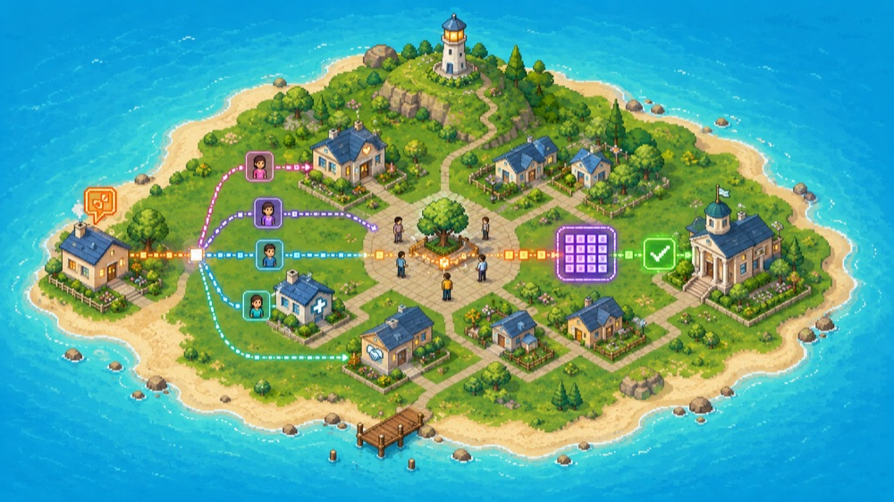

Temposystem — charte graphique · mode jour
Le système d'exploitation du temps donné
01 · Idée directrice
L'identité TEMPOSYSTEM est un monde de jour : une île vivante posée sur la mer, où chaque foyer, chaque chemin lumineux, chaque personne réunie sur la place raconte le temps partagé. On quitte le sombre-néon : la coopération est claire, chaude, lisible. Le bleu de la mer porte l'ensemble (l'environnement, l'horizon commun) ; le cycle du jour code les fonctions ; le parchemin accueille la lecture.
Temposystem enregistre chaque seconde partagée comme un anneau de plus : une mémoire qui grandit sans perdre son centre. Une trace, jamais une créance.
02 · La mer & l'île — le monde
Le bleu de la mer est la couleur ajoutée à la charte : c'est le milieu dans lequel tout se passe — l'environnement partagé, la distance qu'on traverse, l'horizon. L'île est la communauté ; les chemins colorés sont les contributions qui circulent d'un foyer à l'autre ; la place centrale et son arbre sont la présence réunie.
03 · Palette — le jour, la mer & la matière
04 · Règles de couleur — une couleur, une fonction
La mer est le fond du monde ; le parchemin porte le texte ; une section n'utilise jamais tout le cycle à la fois — une dominante + une impulsion + l'encre. Le rouge reste réservé aux incidents réels.
05 · Typographie — deux voix (révisée le 17/07/2026)
06 · Vocabulaire de formes
07 · Le header incarne la charte